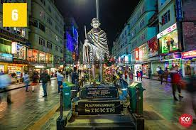
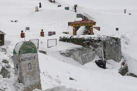
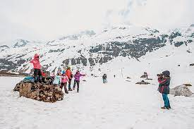
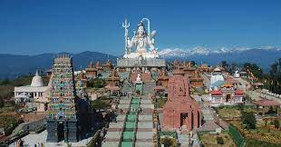
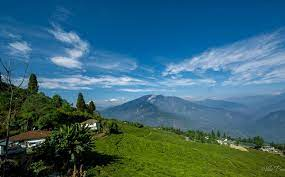
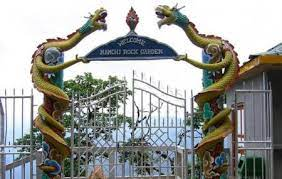
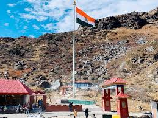

Mahatma Gandhi Marg
A visit to Gangtok is really incomplete without paying visits to M. G. Marg, Gangtok, which is a ‘must visit’ place. Marg’ refers to ‘Road’ in Hindi, so MG Marg means MG Road. Gangtok is the town centre of the hill town and just like any other important road in a city of India would be named as Mahatma Gandhi Road or MG Road, Gangtok is no exception and hence this place is named as M. G. Marg, Gangtok. Over the years, the road and the area around it has transformed.
The entire road is lined up with numerous glittering shops, restaurants, cafes and bars on both sides. It looks very similar to a shopping mall but out in the open. Locals and tourists take leisure walks or just sit and relax. Many tourists take a table at a roadside restaurant and watch the activities on the street, or relax on one of the benches laid alongside the road. The atmosphere out there is like a carnival. At MG Marg in December, The annual Gangtok Food and Culture Festival is held.

Nathula Pass
Nathula Pass is a mountain pass in the Eastern Himalayas in Sikkim. The high-altitude pass doubles up as the Indo-Chinese border, which serves as the trade link between India and China. Nestled at an elevation of 14,140 feet, Nathula Pass ranks amongst the highest passes accessible by tourists via motorable roads.
This mountainous pass is one of the oldest trading border posts connecting Tibet and India. The silk route, an ancient trade route, used to pass through here. Currently, the Nathula Pass is marked by entrance gates of both countries (India and China) and military bunkers on both sides of the gates. It is one of the unmissable attractions in Sikkim.

Zero Point
The Zero Point in Sikkim or Yumesamdong is a sublime destination for all the altitude junkies. Standing at an elevation of 15,300 feet above mean sea level, the region provides you with beautiful sightseeing shots. You can also witness the convergence of three beautiful rivers and with all the snow-clad mountains, the Zero Point is nothing short of Heaven on earth. The road ends right here and you can’t find any civilization further. The oxygen levels here are pretty low due to the high altitude. Also, the path to ground zero is a bit nasty. But the wonderful reward you get at the end of the journey is worth every trouble.

Char Dham,Namchi
When we hear about Char Dham, we usually remember the four holy shrines on top of the Himalayas in Uttarakhand- Yamunotri, Gangotri, Kedarnath and Badrinath. Also, four pilgrimage sites, Uttarakhand’s Badrinath, Odisha’s Puri, Tamil Nadu’s Rameshwaram and Gujarat’s Dwarka are collectively called Char Dham. And the replica of these four shrines, along with 12 jyotirlingas, have been built atop the Solophok Hill in South Sikkim’s Namchi. Also known as the Siddhesvara Dham, the sweeping temple compound was inaugurated in November 2011. The picturesque complex also houses a 108-feet statue of Lord Shiva.

Pelling
Pelling is a beautiful town in West Sikkim, most popular for breathtaking views of the Kanchenjunga peak and the Himalayas. Located at a high altitude of 6800ft, Pelling is the ideal place for exploring the Himalayan views, without any of the harshness of the high mountains. It is the closest view possible apart from mountain trekking. Located at 115 km from Gangtok, Pelling is also known for its cultural heritage and history.
Pelling has rightfully emerged as the second most popular traveller halt in Sikkim, right after Gangtok. It has plenty to offer to the nature lover, the culturist, the urban traveller, and is the ideal cool summer break on a vacation trip. In structure, it is little more than a few roads flanked by hotels and homestays offering views of the Kanchenjunga. But step out of the main town, and you are a short distance from monasteries, waterfalls, temples and lakes. Nature presents itself in all its glory around Pelling.

Namchi Rock Garden
Namchi Rock Garden is a beautiful park comprising of water bodies, tiny arched bridges over lily pools, wide variety of rare flowers and plantations, slides & swings for children, benches to relax & soak in the views - all make a wonderful experience. The place is extremely calm and peaceful providing great scope to experience the beautiful nature of Sikkim. You can also get the views of the Mt. Kanchenjunga snow peaks and the confluence of rivers Teesta and Rangeet. A popular highlight at the rock garden is the Orchid in Namchi. The garden is about 10 kms from the main town of Namchi. During the month of February to June and October to December the weather is absolutely fantastic to witness the sight and beauty of the garden.

Kanchenjunga
Kanchenjunga range is not just the third highest mountain in the world, but also a sacred entity in Sikkim. Its five peaks symbolise the five treasures―Gold, Silver, Gems, food grains and religious texts. The mountain is so venerated that even today the peak is not scaled by mountaineers, respecting local sentiments. Sighting the mountains is not an easy task, since they are famed for disappearing behind clouds. However, on a clear day, Gangtok has many points from where you can get a superb view of the snow covered peaks.

Baba Harbhajan Singh Memorial Temple
Located between Nathula and Jelepla pass at an altitude of 13,123 ft and about 52kms from Gangtok, Baba Harbhajan Singh Temple is a unique destination mainly due to the legacy attached with it. It is believed that his spirit protects every soldier in the inhospitable high-altitude terrain of the Eastern Himalayas. The legend of Baba goes back 35 years when Sepoy Harbhajan Singh of the 23rd Punjab Regiment went missing. A manhunt was launched and it took the army three days to find his body. It is believed that he himself led the soldiers to the site. The soldiers raised a Samadhi in his name and till date people in the area believe that Baba’s sprit protects the soldier posted here. The Indian Army treated Baba as a soldier who never died and he was retired with full honours in December 2016.